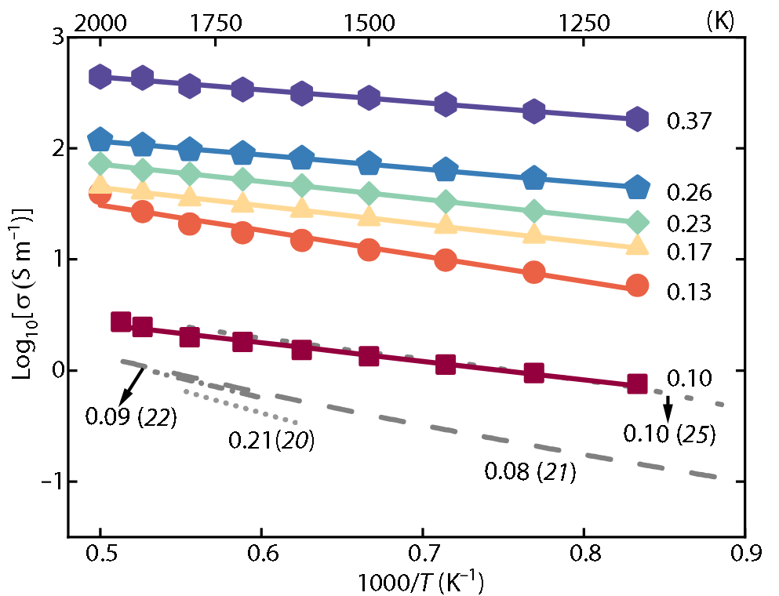
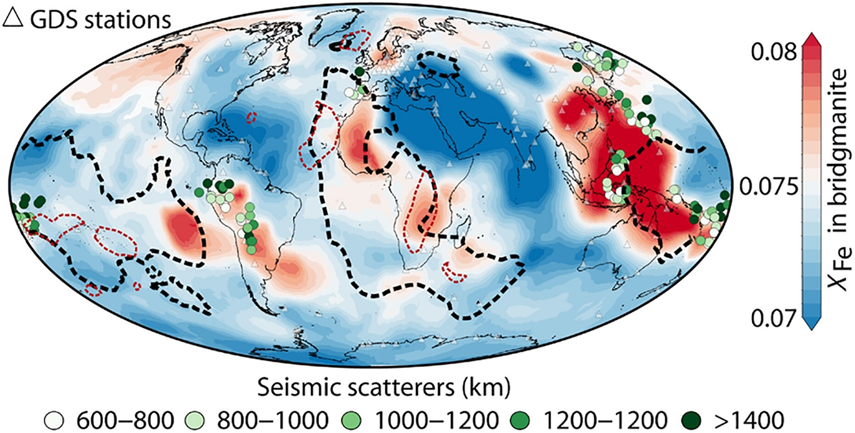

下地幔的物质组成及其空间分布是深部探测的重要科学问题。然而，传统地震学方法难以区分温度变化与化学成分差异对地震波速的共同影响，使得非洲和太平洋下方大型低剪切波速省（LLSVPs）的物质属性及其形成机制长期存在争议。
成都理工大学地球物理学院韩奎博士研究团队针对上述问题，提出了一种基于矿物电导率与全球地磁观测相结合的下地幔化学成分探测新方法。研究团队通过高温高压多面砧实验，在27 GPa、最高约2000 K的下地幔温压条件下，系统测量了不同铁含量含铝布里奇曼石的电导率，首次建立了下地幔条件下布里奇曼石电导率与铁含量之间的定量关系。在此基础上，结合全球地磁测深获得的地幔电导率模型，建立了独立于传统地震学的电磁学探测路径，实现了对下地幔铁含量空间分布的定量约束。
研究结果表明，含铝布里奇曼石的电导率随铁含量增加呈显著的幂律增长关系，指数约为3.6，表现出对铁含量的高度敏感性，而温度变化对电导率的影响相对较小。这一特征使电导率有望成为识别下地幔铁含量变化的有效地球物理参数。基于全球地幔电导率模型，研究团队进一步绘制了下地幔1225 km深度的全球铁含量分布图，发现非洲大型低剪切波速省具有显著的铁富集特征，同时在西太平洋至南美洲俯冲带下方识别出大范围的富铁物质分布，揭示了下地幔化学非均质性及俯冲洋壳深部物质储存的潜在特征。
该研究首次将高温高压矿物电导率实验与全球地磁三维观测相结合，建立了利用电磁学信息独立约束下地幔铁含量的新方法，为解决深部地球探测中温度与化学成分难以区分的关键问题提供了新的思路，也为认识大型低剪切波速省的物质属性、俯冲洋壳的深部归宿以及地幔物质循环过程提供了新的地球物理约束。
以上研究成果发表于国际综合性学术期刊《Science Advances》。论文题目为“Lower-mantle iron heterogeneity constrained by the electrical conductivity of Al-bearing bridgmanite”。成都理工大学地球物理学院韩奎博士为论文第一作者和唯一通讯作者，成都理工大学为第一完成单位。该研究得到了国家自然科学基金青年科学基金项目、欧洲研究理事会（ERC）先进基金项目、德国研究基金会（DFG）海森堡项目以及欧洲航天局Swarm DISC计划的共同资助。

